Rx Colors
Note
This document is automatically generated from the list of colors. Do not modify it.
These colors are to be used across all Rx Open Tools.
Grayscale
| Color | Name | Hex |
|---|---|---|
| Black | #000000 | |
 |
Obsidian | #151515 |
 |
Abyss Grey | #1c1c1c |
 |
Very Dark Grey | #222222 |
 |
Darker Grey | #252525 |
 |
Dark Grey | #333333 |
 |
Less Dark Grey | #434343 |
 |
Medium Grey | #6d6d6d |
 |
Less Light Grey | #9d9d9d |
| Light Grey | #e3e3e3 | |
 |
White | #ffffff |
Tints
Some of these tints have a specific meaning, especially when used with icons. See the icon color section for more information and a list of those.
Dark tints
Darker tints are to be used on lighter backgrounds (Lightness > 50%).
| Color | Name | Hex |
|---|---|---|
 |
Dark Cyan | #00a2a3 |
| Dark Blue | #10688e | |
 |
Dark Green | #3e8b45 |
 |
Dark Purple | #8109ad |
|  | Dark Pink | #842c53 |
 |
Dark Citrus | #84b330 |
 |
Dark Red | #ac1010 |
Light tints
Lighter tints are to be used on darker backgrounds (Lightness < 50%).
| Color | Name | Hex |
|---|---|---|
 |
Light Cyan | #00a2a3 |
 |
Light Blue | #83d3f6 |
 |
Light Green | #8ad891 |
 |
Light Purple | #d588f1 |
 |
Light Citrus | #d8ff8c |
|  | Yellow | #ecd718 |
 |
Light Pink | #f188ba |
 |
Light Red | #f96969 |
Specific colors
These colors are not part of the colors which should be used by RxOT, but they may be useful for intergration into host platforms.
| Color | Name | Hex |
|---|---|---|
 |
Ae Grey | #262626 |
 |
Ae Blue | #2D8CEB |
 |
Ae Grey Light | #4d4d4d |
 |
Rxlab Purple | #a526c4 |
 |
Rainbox Productions Red | #ec1818 |